Operating Documentation
Direction 2378260-800, Rev# 10
GOC3 Service Methods (Adv)
Operating Documentation |
| Required Persons | Preliminary Reqs | Procedure | Finalization |
|---|---|---|---|
| 1 |
| Last Revised | 12 July 2004 |
| Item | Qty | Effectivity | Part# | Manufacturer | |
|---|---|---|---|---|---|
| Flat-blade screwdriver | 1 | - | - | - | |
| Phillips screwdriver | 1 | - | - | - | |
| Item | Qty | Effectivity | Part# | Manufacturer | |
|---|---|---|---|---|---|
| Connectivity Kit | 1 | - | 2402589 | - | |
| POTENTIAL FOR SHOCK | |
| VOLTAGE MAY BE PRESENT. | |
| Use proper lockout/tagout procedures before replacing components. See safety menu of Service Document gui for appropriate procedures. |
There are three configurations of the H1 (1.X) gantry. Refer to the following items to determine which parts are required for this upgrade, based on the gantry configuration.
(For Systems with an O2 computer.) Locate these three (3) cables in the Connectivity Kit, 2402589:
Console “Y” cable, 5112263
Console adapter cable, 2295231
Gantry adapter cable, 2295232
(For Systems without an O2 computer.) Locate these two (2) cables in the Connectivity Kit, 2402589:
Console “Y” cable, 5112263
Gantry adapter cable, 2295232
There will be extra cables and adapters in the box, after completing this upgrade. Only use these additional cables if required for your system upgrade. Return all unused components to the Recycle Center, for proper disposal.
The gantry “Y” cable has a “long” end, with three (3) cables that are not used for this upgrade. Coil these unused cables in the bottom of the gantry.
There are two (2) different gantry “Y” cables and three (3) console “Y” cables/adaptors included in this connectivity kit. Cables required for configurations 1 and 2 are detailed in this procedure.
The following illustrations ( Illustration 1, Illustration 2, Illustration 3 and Illustration 4) show the cable connections as they should appear when the upgrade is complete.
Illustration 1: Gantry “Y” Cable, 2295232
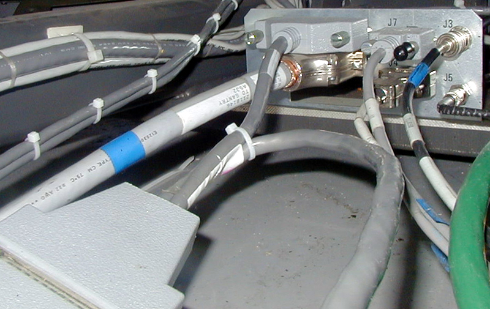
Illustration 2: Console Adapter Cable, 2295231
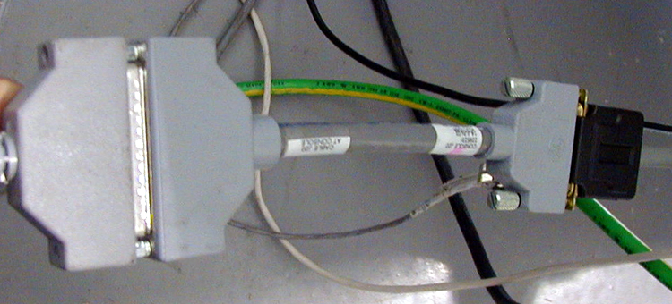
Illustration 3: Console “Y” Cable, 5112263
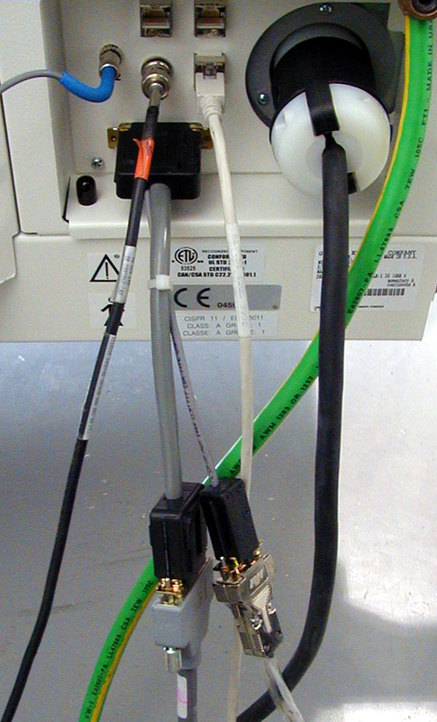
Illustration 4: Correctly Wired S-DAS Console
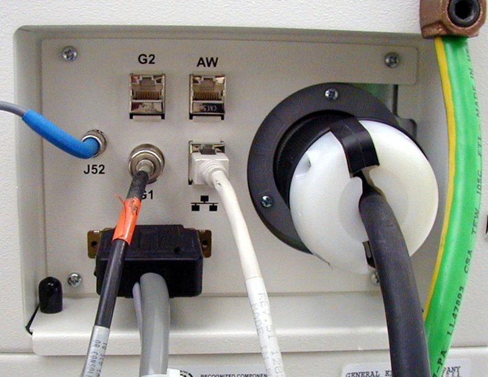
Depending on system configuration, the gantry A1A5 panel should look similar to that shown in Illustration 5 and Illustration 6.
Illustration 5: Gantry Connections
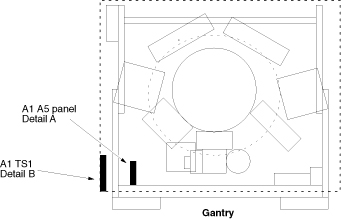
Illustration 6: A1A5 Panel Connections
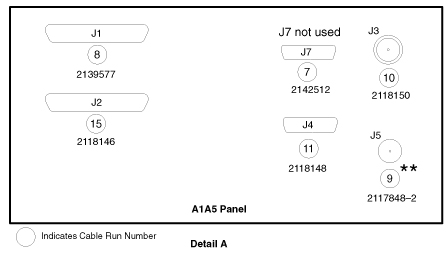
Depending on system configuration, the console back panel should look similar to that shown in Illustration 7 or Illustration 8.
Illustration 7: Console Back Panel (with O2 Computer)
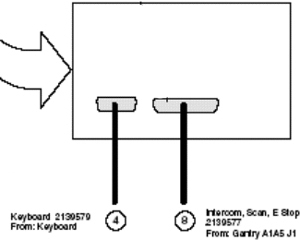
Illustration 8: Console Back Panel (without O2 Computer)
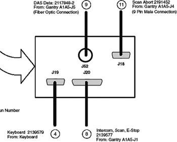
Remove gantry base cover, and compare the gantry/console configuration to those shown in the previous illustrations. Locate the GRE Connectivity Kit. Locate and use the appropriate adapter cables for your system upgrade.
Choose and follow the procedure appropriate to your particular system configuration, as listed below. Then, complete the installation, using the common procedure detailed in Additional Connections and Checks.
H1 1.X Gantry Configuration One (32 Pin Cable) for systems with or without O2 and with a 32 pin console J20 cable, 2139577.
H1 1.X Gantry Configuration Two (25 Pin Cable) for systems with or without O2 and with a 25 pin console J20 cable, 5112263.
Follow this procedure ONLY if your configuration uses the 32 pin console J20 cable, p/n 2139577.
Refer to Illustration 9.
Illustration 9: Configuration One
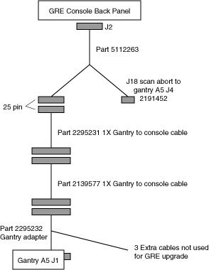
Locate the following three (3) cables in the Connectivity Kit:
5112263 - Console “Y”
2295231 - Console adapter
2295232 - Gantry adapter
Connect console adapter, 2295231, to the existing J20 cable. See Illustration 2.
Connect the console “Y” adapter, 5112263, to the cables J20 and J18 - 2191452 (existing console cables). Then connect the console “Y” adapter J20 end to console J20 connector. See Illustration 3
At the gantry base, connect the gantry adapter cable, 2295232, to the J1 cable, 2139577, from the console. Then connect the short end of the adapter cable to the gantry A5J1 connector. Coil the long end with three cables in the gantry base. Connect the thin gray cable from the console J18 to gantry A5J4. See Illustration 1.
Check all cable connections and install all gantry base covers.
Follow this procedure ONLY if your configuration uses the 25 pin console J20 cable, p/n 5112263.
Refer to Illustration 10.
Illustration 10: Configuration Two
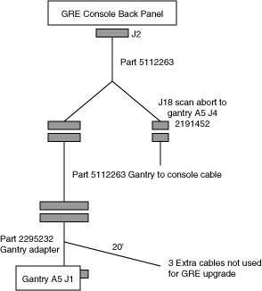
Locate the following two (2) cables in the Connectivity Kit:
5112263 - Console “Y”
2295232 - Gantry Adapter
Connect the console “Y” adapter to cables J20 - 5112263 and J18 - 2191452 (existing console cables). Then connect the console “Y” adapter J20 end to console J20 connector. See Illustration 3.
At the gantry base, connect the gantry adapter cable, 2295232, to the J1 - 5112263 cable from the console. Then connect the short end of the adapter cable to the gantry A5J1 connector. Coil the long end with three cables in the gantry base. Connect the thin gray cable from the console J18 to gantry A5J4. See Illustration 1.
Check all cable connections and install all gantry base covers.
Follow these additional steps for either system configuration.
Reconnect H1 (1.X) gantry cables to the GRE console. See Table 1 and Illustration 12. Refer to the H1 (1.X ) gantry wiring map for all gantry connections.
Illustration 11: Adapter Cable
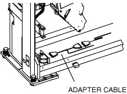
Table 1: GRE Console Connections
| H1.X CABLES FROM | GRE CONSOLE CONNECTION |
| New Console “Y” Cable | Back Bulkhead J20 |
| Fiber Optic Cable | Back Bulkhead J52 |
| LAN BNC | Back Bulkhead G1 - LAN |
| Hospital Network | Network (connector to right of G1 connector) |
| 4-wire power | New 3-wire power |
| Ground | Ground |
Illustration 12: GRE Console Rear Bulkhead Connections
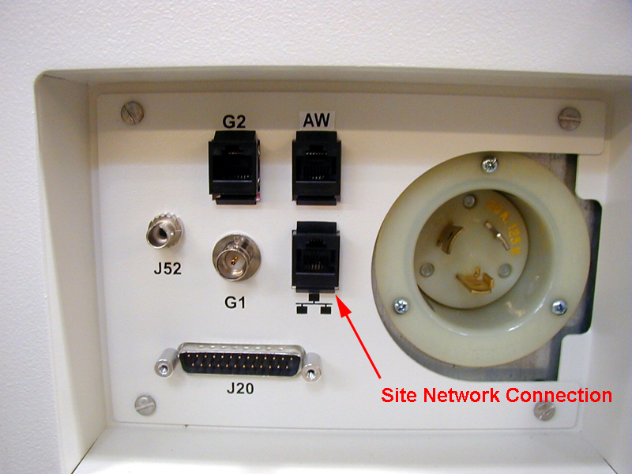
Install and connect new GRE single phase power cord between the PDU and the gantry rear power connector.
Check all cables at the console with the connection in Table 1.
Check cable to gantry A1A5 connections. See Step .
Table 2: Gantry A1A5 Panel Connections
| H1.X CABLES FROM | GANTRY CONNECTION |
| “Y” In-Line Cable from OC | A1A5 J1 |
| Fiber Optic Cable | A1A5 J3 |
| LAN BNC | A1A5 J5 |
| Scan INTL Cable from OC | A1A5 J4 |
Reapply Console and Gantry Power.
No finalization required.